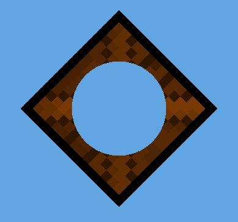
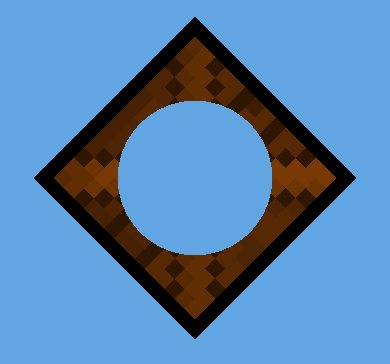

精灵渲染器 (Sprite Renderer)
The Sprite Renderer component renders the Sprite and controls how it visually appears in a Scene for both 2D and 3D projects.
When you create a Sprite (GameObject > 2D Object > Sprite), Unity automatically creates a GameObject with the Sprite Renderer component attached. You can also add the component to an existing GameObject via the Components menu (Component > Rendering > Sprite Renderer).
属性
| 属性 | 功能 |
|---|---|
| Sprite | Define which Sprite texture the component should render. Click the small dot to the right to open the object picker window, and select from the list of available Sprite Assets. |
| Color | Define the vertex color of the Sprite, which tints or recolors the Sprite’s image. Use the color picker to set the vertex color of the rendered Sprite texture. See the Color section below this table for examples. |
| Flip | Flips the Sprite texture along the checked axis. This does not flip the Transform position of the GameObject. |
| Material | Define the Material used to render the Sprite texture. |
| Draw Mode | Define how the Sprite scales when its dimensions change. Select one of the following options from the drop-down box. |
| Simple | The entire image scales when its dimensions change. This is the default option. |
| Sliced | Select this mode if the Sprite is 9-sliced. |
| Size (‘Sliced’ or ‘Tiled’) | Enter the Sprite’s new Width and Height to scale the 9-sliced Sprite correctly. You can also use the Rect Transform Tool to scale the Sprite while applying 9-slicing properties. |
| Tiled | By default, this mode causes the middle of the 9-Sliced Sprite to tile instead of scale when its dimensions change. Use Tile Mode to control the tiling behavior of the Sprite. |
| Continuous | This is the default Tile Mode. In Continuous mode, the midsection tiles evenly when the Sprite dimensions change. |
| Adaptive | In Adaptive mode, the Sprite texture stretches when its dimensions change, similar to Simple mode. When the scale of the changed dimensions meets the Stretch Value, the midsection begins to tile. |
| Stretch Value | Use the slider to set the value between 0 and 1. The maximum value is 1, which represents double the original Sprite’s scale. |
| Sorting Layer | Set the Sorting Layer of the Sprite, which controls its priority during rendering. Select an existing Sorting Layer from the drop-down box, or create a new Sorting Layer. |
| Order In Layer | Set the render priority of the Sprite within its Sorting Layer. Lower numbered Sprites are rendered first, with higher numbered Sprites overlapping those below. |
| Mask Interaction | Set how the Sprite Renderer behaves when interacting with a Sprite Mask. See examples of the different options in the Mask Interaction section below. |
| None | The Sprite Renderer does not interact with any Sprite Masks in the Scene. This is the default option. |
| Visible Inside Mask | The Sprite is visible where the Sprite Mask overlays it, but not outside of it. |
| Visible Outside Mask | The Sprite is visible outside of the Sprite Mask, but not inside it. The Sprite Mask hides the sections of the Sprite it overlays. |
| Sprite Sort Point | Choose between the Sprite’s Center or its Pivot Point when calculating the distance between the Sprite and the camera. See the section on Sprite Sort Point for further details. |
详细信息
Color
The image below demonstrates the effect of changing the RGB values on the Sprite Renderer’s Color setting. To change a Sprite’s opacity, change the value of its Color property’s Alpha (A) channel.
Material
Use a Material’s Material and Shader settings to control how Unity renders it. Refer to Materials, Shaders & Textures for further information on these settings.
The default Material for newly created Sprites is Sprites - Default. Scene lighting does not affect this default Sprite. To have the Sprite react to lighting, assign the Material Default - Diffuse instead. To do this, click the small circle next to the Material field to bring up the object picker window, and select the Default-Diffuse Material.
Mask Interaction
Mask Interaction controls how the Sprite Renderer interacts with Sprite Masks. Select either Visible Inside Mask or Visible Outside Mask from the drop-down menu. The examples below demonstrate the effect of each option with a square Sprite and a circle Mask:
To interact with a Sprite Mask, select Visible Inside Mask or Visible Outside Mask from the drop-down menu.
 

Sprite Sort Point
This property is only available when the Sprite Renderer’s Draw Mode is set to Simple.
In a 2D project, the Main Camera is set to Orthographic Projection mode by default. In this mode, Unity renders Sprites in the order of their their distance to the camera, along the direction of the Camera’s view.
By default, a Sprite’s Sort Point is set to its Center, and Unity measures the distance between the camera’s Transform position and the Center of the Sprite to determine their render order.
To set to a different Sort Point from the Center, select the Pivot option. Edit the Sprite’s Pivot position in the Sprite Editor.
- 2018–10–05 Added definition for new functionality.
- Ability to sort Sprite-based renderers using the pivot position added in 2017.3 New in 2017.3